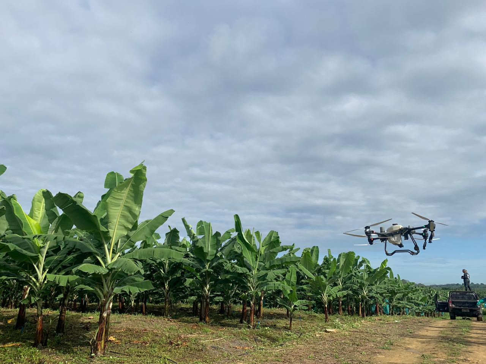

Mas Popular
Fumigación con Drones
Aplicaciones precisas y uniformes que reducen deriva en comparación a las avionetas, optimizan insumos y priorizan la seguridad del cultivo y del personal.
- Aplicación uniforme con control preciso de altura, caudal y tamaño de gota
- Reducción de deriva y sobreaplicación de fitosanitarios.
- Mayor seguridad operativa al minimizar la exposición del personal.
- Acceso eficiente a zonas difíciles sin compactar el suelo.
- Optimización de tiempos de aplicación y continuidad operativa del cultivo.
$$ Precio Variable por Hectárea
Agenda tu Servicio

Fertilización
Distribución eficiente de nutrientes según las condiciones reales del campo, mejorando el rendimiento y la salud del suelo.
- Dosificación exacta de nutrientes según requerimientos del cultivo.
- Mejora en la eficiencia de absorción foliar y radicular.
- Reducción de pérdidas por escorrentía o volatilización.
- Incremento del vigor, desarrollo y uniformidad del cultivo.
- Uso más eficiente de insumos y reducción de costos operativos.
$$ Precio Variable por Hectárea
Agenda tu Servicio

Mapeo de Campo
Levantamiento terrestre y aéreo de alta resolución para conocer el estado, la variabilidad y la planificación operativa del cultivo.
- Obtención de información geoespacial actualizada y de alta resolución.
- Identificación de variabilidad espacial dentro del lote o finca.
- Soporte técnico para planificación de aplicaciones y labores agrícolas.
- Delimitación precisa de áreas productivas y zonas problemáticas.
- Base técnica para agricultura de precisión y trazabilidad.
$$ Precio Variable por Hectárea
Agenda tu Servicio

Análisis de Cultivo
Procesamiento de datos e índices vegetativos para detectar estrés, evaluar vigor y tomar decisiones agronómicas oportunas.
- Detección temprana de estrés hídrico, nutricional o sanitario.
- Evaluación objetiva del vigor y desarrollo del cultivo.
- Priorización de intervenciones agronómicas basadas en datos.
- Seguimiento temporal de la evolución del cultivo.
- Mejora en la toma de decisiones técnicas y productivas.
--- Proximamente ---
Agenda tu Servicio